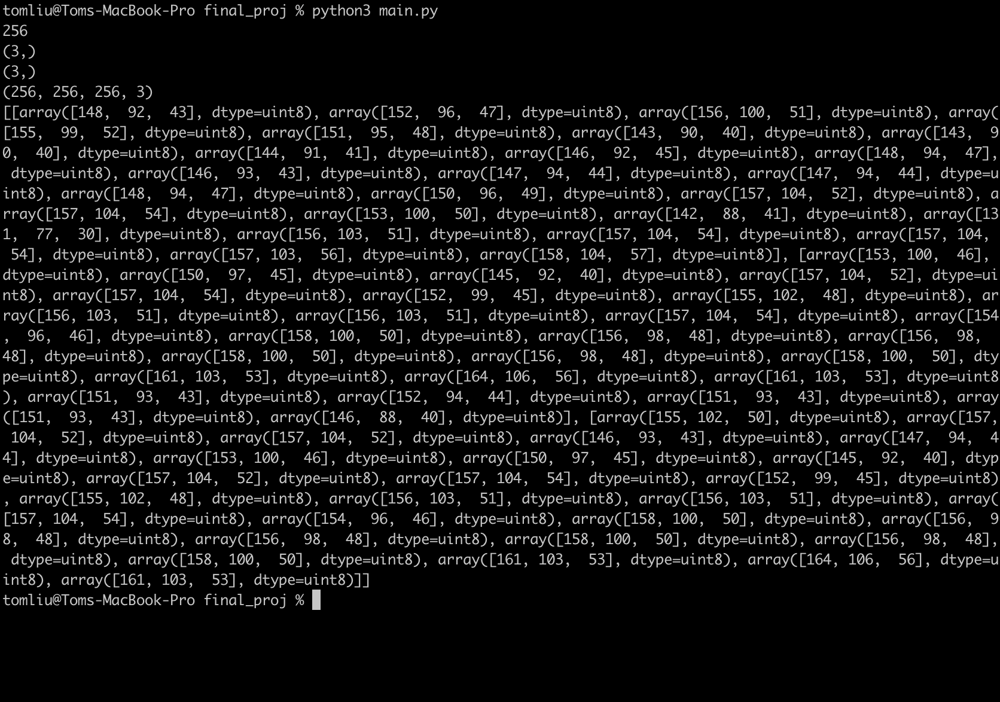
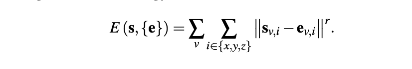

CS184 Final Project: Solid Texture Synthesis
Andrew Kim (adkim@berkeley.edu), 3032735084, github.com/adkim99
Mariana Vazquez (marianavazquezr@berkeley.edu) : 3033107768, github.com/marianavazquezr
Tom Liu (xingweike@berkeley.edu): 3032681823, github.com/Xingweike
Milestone Update
In our final project we proposed a way to create a solid texture from an existing 2D texture, and apply the same solid texture onto multiple objects. We are currently implementing the Solid Texture Synthesis algorithm from Kopf's Paper "Solid Texture Synthesis from 2D Exemplars". We split up the main synthesis algorithm into two parts: the search phase and the optimization phase.
In the search phase, we started off with a solid filled in with random pixels from the original texture. Our goal for the search phase was to identify three neighborhoods from the original texture that matches with the three axis-aligned neighborhoods at each voxel in our generated solid. This was accomplished by taking each axis aligned neighborhood from our voxel, and computing the neighborhood in our original texture that minimized our energy function. The energy function is the sum of the Euclidean norm (L2 norm) between each pixel's RGB values.
In the optimization phase, we take the three neighborhoods we found in the search phase, and use these neighborhoods to update each voxel in our randomly generated solid. To find the value of each voxel, we find the weighted average of a collection of texels from our different exemplar neighborhoods we found in the previous phase.
The main issue with our current implementation is that it is too slow. Even for a small 128x128 texture, we are creating a solid with 128x128x128 voxels, which is about 2 million voxels. For each voxel, we are comparing its neighborhoods to each neighborhood in the texture, which is another 128x128 pixels at most, for each voxel. And that's only the search phase. In the end, this could take until the heat death of the universe to create a small solid texture of wood.
Preliminary Results
Our preliminary results were done using a sample wood texture of 256x256, with a neighborhood size of 5x5.
|

|
|
|

|
|

|
Future Work Plan
Our current program is currently being written in python, using convienant methods from libraries such as numpy. However, we have yet found a way to actually map our solid texture onto solids, whether the results are rendors or actual 3D model. Our current solid texture is being stored in an array of RGB values, which is very space intensive.
Currently, our program is not optimized, and even with a small neighborhood size of 25x25 and a small texture like 256x256, the process would take an extremely long time. We hope to speed up this time by using some prebuilt python libraries that can help with complex computations such as calculating the nearest neighbors. We are curreently storing the solid texture in a 3D array containing the RGB values of each voxel, so if we were to scale the textures or the neighborhood sizes the memory required would be massive. Both time complexity and space complexity are huge issues right now, and we are making attempts to solve it. We are thinking about porting everything to C++ to hopefully make things a bit faster.
Potential libraries we are looking at:
https://github.com/yahoojapan/NGT
https://github.com/spotify/annoy
https://pypi.org/project/NearPy/0.1.2/
Additionally, in Kopf's paper he mentions histogram matching. We also hope to implement this in the future to help solve the issue of blurry textures.